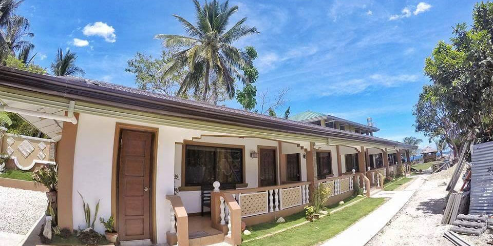

About Us
We are a long standing resort, family owned for generations seeking to inspire more guests to experience the best we have to offer.
Dream Getaways Resort is the perfect choice whilst visiting Wellington. We are independent, so unlike a chain we can really look after you, with personalized extras that you may not find in other hotels. We are located in the best part of the city, close to cafes, shops and restaurants and within walking distance of Wellington's vibrant waterfront.
We can accommodate everyone whether you're by yourself or with the whole family we can provide a lasting experience. We offer dining with our own restaurant and can provide entertainment with our friends at Exp's, they can offer tours via biking, hiking and canoeing.
If you are interested for more information on our dining options as well as times and conditions please visit our Restaurant Page. If you are interested in our activities via Exp's please visit our Extras page.